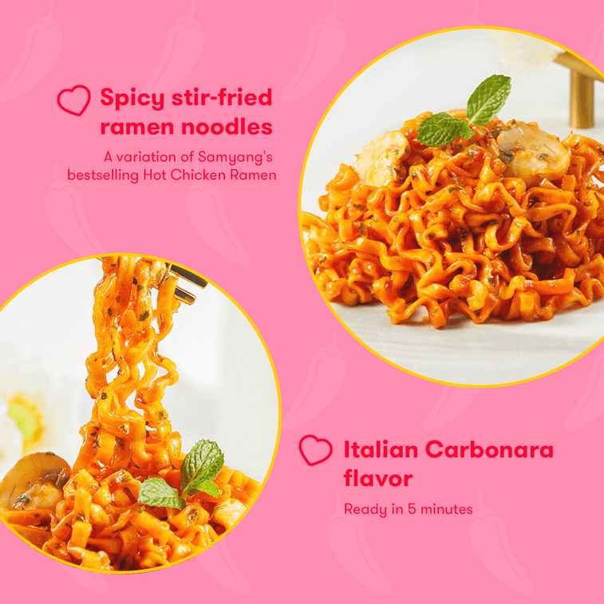
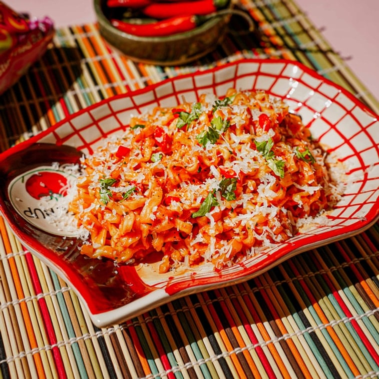

<div> <table style="border-collapse: collapse; width: 99.9809%;" border="1"><colgroup><col style="width: 49.9522%;"><col style="width: 49.9522%;"></colgroup> <tbody> <tr> <td> <div><span style="font-size: 14pt;"><strong>Ramen instant cu gust de pui si carbonara, iute Samyang, 130g</strong></span></div> <div><span style="font-size: 14pt;">Echilibrul perfect &icirc;ntre iute și cremos. Descoperă faimosul ramen Samyang Buldak Carbonara, care &icirc;mbl&acirc;nzește legendara iuțeală coreeană cu o notă fină și catifelată de br&acirc;nză și lapte. Tăițeii sățioși, perfect elastici, absorb ideal sosul dens, oferindu-ți un răsfăț culinar modern, savuros și plin de personalitate.</span></div> </td> <td></td> </tr> <tr> <td></td> <td><span style="font-size: 14pt;">Gata in doar 5 minute!</span></td> </tr> <tr> <td><span style="font-size: 14pt;">Iute, cremos și absolut irezistibil. Savurează o porție excelentă de tăiței Samyang Buldak Carbonara. Sosul catifelat, cu note bogate de br&acirc;nză, &icirc;mbl&acirc;nzește perfect legendara iuțeală coreeană, transform&acirc;nd fiecare &icirc;nghițitură &icirc;ntr-o experiență gastronomică modernă, plină de savoare și textură ideală.</span></td> <td></td> </tr> </tbody> </table> </div>